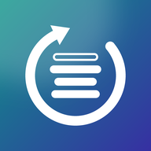

Engine test, version 1.1
Splits a song into its layers on this computer, with nothing uploaded. This test measures how fast your graphics card does it and lets you hear the beat with the vocals taken out.
Checking your graphics card…
Runs one 4-second chunk several ways, checks each gives the same result, and keeps the fastest. It takes a few minutes and needs the internet once.
Drag the highlighted part to a stretch with singing, so you can judge how well the vocals come out.
Click a layer’s name to take it out of what you hear, or put it back. Click the headphones to hear one layer alone. Click a waveform to jump there. Space plays and pauses.